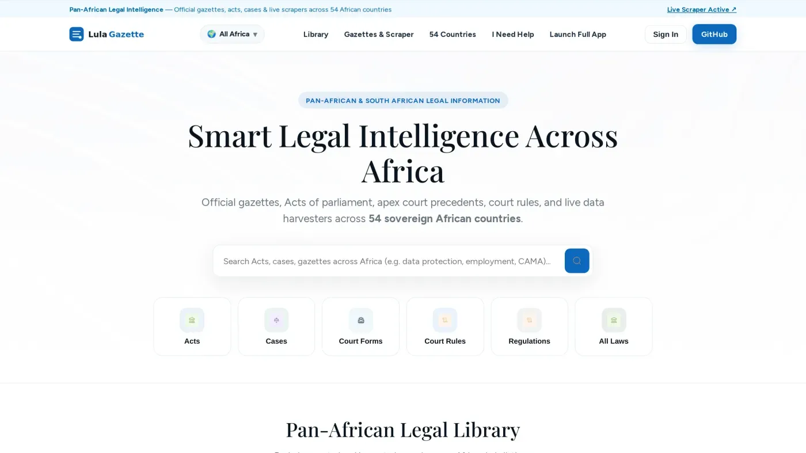
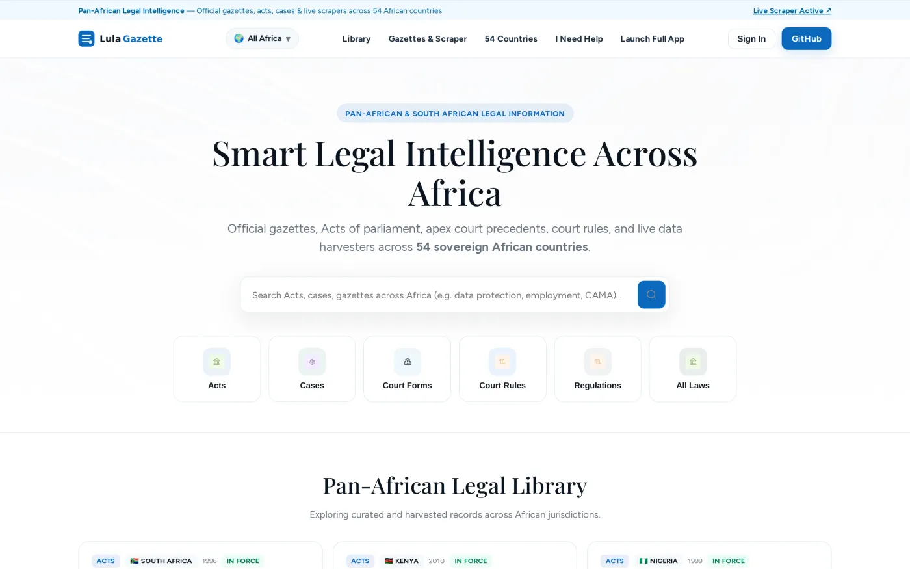
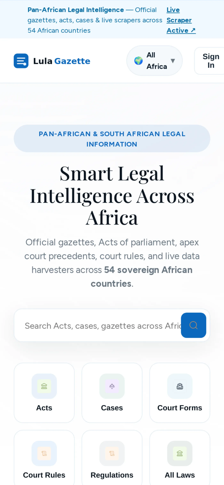

Acts
Acts of parliament across jurisdictions — from the South African Constitution to CAMA 2020 in Nigeria — each with a plain-language summary and a one-tap copy citation.

African legal information is public in principle and hard to reach in practice. LulaGazette is my personal project — the reachable part: gazettes, acts of parliament, apex-court judgments and court rules from all 54 sovereign countries, harvested continuously and searchable before anyone is asked to sign up. 2026 is the year it went from side project to running system. Research, design and build were all mine.
A legal library anyone can search — before they sign up.
LulaGazette aggregates and serves documented legal resources — official gazettes, acts of parliament, apex court precedents, court forms, court rules and regulations — at the speed a working practitioner actually needs them. Pan-African is the headline, not a footnote: every country in Africa has its own row on the board.
The audience is deliberately broad — citizens with a specific problem, lawyers preparing a matter, students and institutions doing research. So the interface has to carry deep, citable content without ever feeling like a database front end, and it has to answer in the jurisdiction the user is standing in.
LulaGazette is live — the library, the 54-country board and the harvester are running. Open the site, pick a country and search.
The product
Acts of parliament across jurisdictions — from the South African Constitution to CAMA 2020 in Nigeria — each with a plain-language summary and a one-tap copy citation.
Apex court precedents with real citations — KESC 42, Supreme Court of Nigeria, Constitutional Court of SA — the authority a matter actually runs on.
The forms a matter starts with, filed against the right institution — no more hunting court websites one by one.
Procedural rules and regulations that decide how a matter moves, kept current as the gazettes update them.
One field from centre screen. Category chips — Acts, Cases, Court Forms, Court Rules, Regulations, All Laws — narrow the corpus; guests can search before they register.
Automated data pulling connecting AfricanLII, SAFLII, Kenya Law, LawNigeria, GhanaLII and official gazette printers — one pull, the latest notices.
The decision
The challenge
Africa's legal information is scattered across 54 sovereign jurisdictions — each with its own gazette, its own apex court, its own digitisation gaps. Global legal research tools are Western-focused, subscription-heavy and thin on the authority that matters on a continent: the Constitutional Court of SA, the Supreme Court of Kenya, the Supreme Court of Nigeria.
The goal
The bar was set before pixels: be the reference a lawyer opens when the question is "which country, which court, which document" — and stay current without a manual curation team in the loop.
The solution
A legal library anyone can search — before they sign up.
Process
Practitioner interviews and a teardown of every African legal database I could reach. The complaints repeated: cost, gaps, dead links, slow search. Information architecture first — 54 jurisdictions, six content categories, gazette and apex-court metadata per country. Coverage is the product; the schema had to carry it. Guest-first search flows tested with candidates and practitioners. The results card went through a full redesign — summary first, citation one tap away. React front end in Johannesburg, live scrapers behind it. The harvester's source list grew from five to twenty-two as each pull exposed the next gap. Gazettes keep publishing after launch, so the scraper is a product feature with its own monitoring — not a one-time import.
Information architecture first — 54 jurisdictions, six content categories, gazette and apex-court metadata per country. Coverage is the product; the schema had to carry it.
Guest-first search flows tested with candidates and practitioners. The results card went through a full redesign — summary first, citation one tap away.
React front end in Johannesburg, live scrapers behind it. The harvester's source list grew from five to twenty-two as each pull exposed the next gap.
Gazettes keep publishing after launch, so the scraper is a product feature with its own monitoring — not a one-time import.
Where it stands
LulaGazette is live on the web — the honest status, straight from the product:
Key takeaways
In a fragmented market, "we have all 54" beats "we're better at five". The country board does the selling.
Every record carries a real citation and the source text. In law, verifiability is a design requirement, not a feature.
The harvester says what it pulled and when. Stating the source (and the gap) costs trust nothing and buys a lot.
Guests who can search before they sign up come back to register. Utility first, account later.
"Unfair dismissal" and "eviction" are the real search queries. Citizen guides are the onboarding.
It has monitoring, failure states and a release cycle. Design for it like any other surface.
The live product


Trade-offs
The page chooses breadth, 54 jurisdictions, over depth in a few. (Stated on the page: "we have all 54" beats "we're better at five".)
Showing what was pulled and when exposes gaps in the data. The page says stating the gap costs little trust. (Stated on the page.)
Deferring sign-in means registration comes later in the journey. (Stated on the page: the sign-in is for full gazettes, matter notes and live scrapers.)
Each country with its gazette, its apex court and its court rules.
Signing up saves your work; it is not the price of entry.
Every item states where it came from and when it was fetched.
Harvesters keep the library current rather than frozen at launch.
Open the live site — pick a country, run a search, pull the latest gazette. That's the product, not a demo of the product.